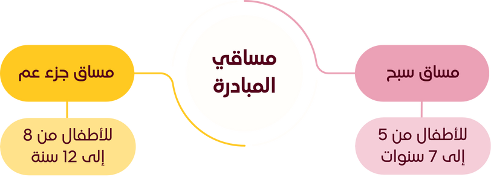

لم تغفل مبادرة تاج الوقار لحفظ القرآن الكريم عن فئة الصغار الذين يمثلون شباب مستقبل الأمة الإسلامية ومشعلها ؛ لذا افتتحت المبادرة دورة البراعم لتحفيظ القرآن - عن بعد - ، للأطفال ذكورا وإناثا من 5 إلى 12 عاما والتي تتم عبر تطبيقي الواتساب و جوجل ميت .
الدورة بمساقين أساسيين تراعي احتياجات هذه الفئة العمرية على الشكل التالي:

سيرورة الدورة
الدورة تتوزع أيامها مابين حفظ و مراجعة على الشكل التالي:
توزيع الحصص داخل الأسبوع
الحفظ
الأيام 4 الأولى من الأسبوع
المراجعة
الأيام 5 الأولى من الأسبوع
الحصة الأسبوعية مع الأستاذة
يوم السبت أو الأحد
دورة البراعم تتميز بالتيسير والمرونة، فمقدار الحفظ والمراجعة ليس ثابتا، يبدأ البراعم بحفظ يومي بسيط وورد مراجعة متناسب معه تتم فيه مراعاة كل فئة عمرية وقدرتها الشخصية على الحفظ والتثبيت والاستيعاب، وبعد أن يتم الاستئناس و يزداد المحفوظ و يزيد المقدار و يتم التركيز على المراجعة والتكرار. فالحفظ في الصغر كالنقش على الحجر.